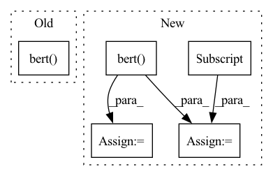

Pattern ID :4590

Before Change
self.classifier = nn.Linear(self.bert.config.hidden_size, num_labels)
def forward(self, input_ids=None, attention_mask=None, token_type_ids=None, position_ids=None, head_mask=None, inputs_embeds=None, labels=None):
outputs = self.bert(
input_ids = input_ids,
attention_mask = attention_mask,
token_type_ids = token_type_ids,
position_ids = position_ids,
head_mask = head_mask,
inputs_embeds = inputs_embeds
)
pooled_output = outputs[1]
pooled_output = self.dropout(pooled_output)
logits = self.classifier(pooled_output)
After Change
self.classifier = nn.Linear(self.bert.config.hidden_size, num_labels)
def forward(self, input_ids, attention_mask, mention_pos_idx, labels=None):
outputs = self.bert(
input_ids = input_ids,
attention_mask = attention_mask
)
tok_embed = outputs[0]
bsz, mtok, dim = tok_embed.shape
tok_embed_flat = tok_embed.reshape(-1, dim)
men_idx = torch.arange(bsz).to(tok_embed.device) * mtok + mention_pos_idx
men_embed = tok_embed_flat[men_idx]
pooled_output = self.dropout(men_embed)
logits = self.classifier(pooled_output)
In pattern: SUPERPATTERN
Frequency: 3
Non-data size: 5
Instances
Fragment ID: 16547725
Project Name: svjan5/medtype
Commit Name: 160813be93a76d6c1b00fdb9c8a86726c73e1803
Time: 2021-03-19
Author: shikharvashishth@gmail.com
File Name: medtype-as-service/server/medtype_serving/server/medtype/models.py
M Class Name: BertPlain
N Class Name: BertPlain
M Method Name: forward(5)
N Method Name: forward(8)
M Parent Class: nn.Module
N Parent Class: nn.Module
M File Name: medtype-as-service/server/medtype_serving/server/medtype/models.py
N File Name: medtype-as-service/server/medtype_serving/server/medtype/models.py
M Start Line: 12
M End Line: 23
N Start Line: 13
N End Line: 25
'>
Before Change
return loss
def forward(self, token):
x = self.bert(token).pooler_output
x = self.linear(x)
return x
After Change
def forward(self, input_ids, attention_masks, segment_ids, valid_masks):
current_device = input_ids.device
x = self.bert(input_ids=input_ids, attention_mask=attention_masks, token_type_ids=segment_ids).last_hidden_state
batch_size, max_token_len, embedding_dim = x.shape
valid_x = torch.zeros(batch_size, max_token_len, embedding_dim, dtype=torch.float, device=current_device)
for i in range(batch_size):
pos = 0
for j in range(max_token_len):
if valid_masks[i][j].item() == 1:
valid_x[i][pos] = x[i][j]
pos += 1
valid_x = self.linear(valid_x)
return valid_x
'>
Fragment ID: 16547732
Project Name: cognlp/cogktr
Commit Name: 07b44fcf057cd77c323c0e3084f112cbf33fc1c9
Time: 2022-06-08
Author: 2113809110@qq.com
File Name: cogktr/models/base_sequence_labeling_model.py
M Class Name: BaseSequenceLabelingModel
N Class Name: BaseSequenceLabelingModel
M Method Name: forward(5)
N Method Name: forward(2)
M Parent Class: BaseModel
N Parent Class: BaseModel
M File Name: cogktr/models/base_sequence_labeling_model.py
N File Name: cogktr/models/base_sequence_labeling_model.py
M Start Line: 27
M End Line: 30
N Start Line: 51
N End Line: 63
'>
Before Change
self.classifier = nn.Linear(self.bert.config.hidden_size, num_labels)
def forward(self, input_ids=None, attention_mask=None, token_type_ids=None, position_ids=None, head_mask=None, inputs_embeds=None, labels=None):
outputs = self.bert(
input_ids = input_ids,
attention_mask = attention_mask,
token_type_ids = token_type_ids,
position_ids = position_ids,
head_mask = head_mask,
inputs_embeds = inputs_embeds
)
pooled_output = outputs[1]
pooled_output = self.dropout(pooled_output)
logits = self.classifier(pooled_output)
After Change
self.classifier = nn.Linear(self.bert.config.hidden_size, num_labels)
def forward(self, input_ids, attention_mask, mention_pos_idx, labels=None):
outputs = self.bert(
input_ids = input_ids,
attention_mask = attention_mask
)
tok_embed = outputs[0]
bsz, mtok, dim = tok_embed.shape
tok_embed_flat = tok_embed.reshape(-1, dim)
men_idx = torch.arange(bsz).to(tok_embed.device) * mtok + mention_pos_idx
men_embed = tok_embed_flat[men_idx]
pooled_output = self.dropout(men_embed)
logits = self.classifier(pooled_output)
loss = F.binary_cross_entropy_with_logits(logits, labels.float())
'>
Fragment ID: 16547729
Project Name: svjan5/medtype
Commit Name: 982c7e977da2c4dea0263c22ce8f8185e016839f
Time: 2021-03-19
Author: shikharvashishth@gmail.com
File Name: medtype-trainer/models.py
M Class Name: BertPlain
N Class Name: BertPlain
M Method Name: forward(5)
N Method Name: forward(8)
M Parent Class: nn.Module
N Parent Class: nn.Module
M File Name: medtype-trainer/models.py
N File Name: medtype-trainer/models.py
M Start Line: 15
M End Line: 34
N Start Line: 16
N End Line: 33